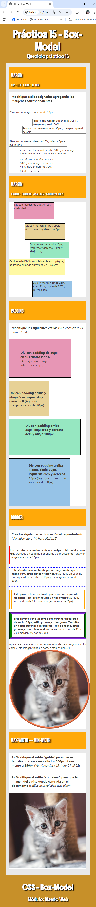

Ejercicio práctico Nº 15
Antes que nada
-
Descargue y descomprima el archivo trabajo_practico15.zip, este ya tiene las carpetas necesarias y el documento HTML para que pueda trabajar
-
Para el siguiente ejercicio, deberá entregar la carpeta del ejercicio en formato .zip con el nombre tp15_nombre_suyo
-
Fecha límite de entrega: jueves 03/04 14:59hs.
-
El título del documento es: "TP15 - Box-"
-
Siga al pie de la letra las instrucciones que se incluyen el archivo index.html
-
Utilice el archivo styles.css que ya se encuentra en la carpeta css y vincúlelo con el documento html
-
Formatee el documento html de modo que se ajuste en diseño a la muestra presentada, tomando como referencia los siguientes estilos:
Area body:
- familia de fuente: Segoe UI
- Tamaño de fuente: 14px;
- Margen: 0px;
- Color de texto: #3f3f3f;
- Color de fondo: #C79029
h1 p
h3
Area header y footer:
- Familia de fuente: “Boldonse” (fuente de google fonts- Ver video clase 12, hora 01:57:22)
- Tamaño de fuente: 1.5em;
- Color de fondo: #C79029;
- Color: de fuente: #FFFFFF;
- padding:25px;
- Texto al centro;
- Sombra de texto según muestra
Area main:
- Color de fondo: #E9E9E9
- padding:20px;
- ancho: 80%;
- margen: 0 auto;
Area section:
- Color de fondo: #FFA909;
- Color: de fuente: #FFFFFF;
- Familia de fuente: "Bebas Neue", sans-serif; (fuente de google fonts- Ver video clase 12, hora 01:57:22)
- Tamaño de fuente: 1.5em;
- padding:15px;
- Sombra de texto según muestra
Area article:
- Color de fondo: #ffffff;
- Margen inferior: 15px; (margin-bottom)
- Tamaño de fuente: 1.2em;
- padding:0;
Muestra
